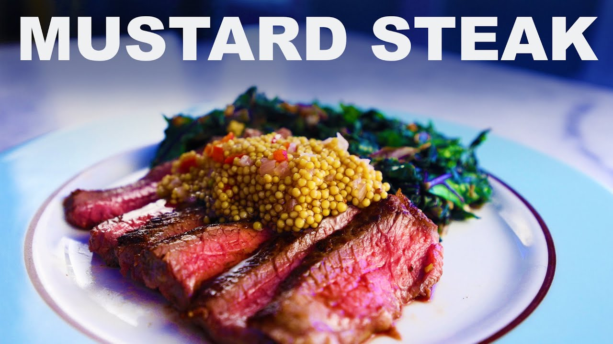

Sirloin steak with pickled mustard seeds and greens
Link to original recipe video by Adam Ragusea
Description

This is a summary of Adam Ragusea's recipe for sirloin steak with pickled mustard seeds and greens
Ingredients
- Sirloin steak
- Dark greens, kale for example
- Mustard seeds
- Garlic
- Ginger
- Oil
- Salt, pepper, sugar
- Chili, shallot
- Vinegar
- Fish sauce or any alternative source of umami
- Honey, optional
- Chinese five spice, optional
- Fresh cilantro, optional as garnish
Steps for the mustard seeds
- Boil about a half cup of whole mustard seeds then drain and rinse
- Repeat the draining and rinsing process to remove bitterness as desired
- Add vinegar, water, and/or sugar to the drained mustard seeds to taste
- Add pinches of salt to seeds to taste
- Fully submerge seeds and boil for 7-8 minutes, add diced vegetables such as chilis or shallots if desired
- Adjust with salt, sugar, or other flavors to taste
Steps for the sirloin and greens
- Prepare greens by cutting out stems and minorly chopping the leaves
- Peel and dice garlic and ginger prior to eating
- Cut between natural boundaries and trim out fat and unwanted tissue
- Season with salt, pepper, optional five spice, and rub with oil
- Cook the steaks on very high heat in a wide pan, cooking the sliced stems once the steaks are removed from the pan
- After 2 minutes, stir in the prepared garlic and ginger and add leaves from greens
- Cook down leaves and add fish sauce or prepared alternative
- Continue cooking greens for about 5 minutes and season with honey and other seasonings
Slice meat and plate with hot greens, spoon on mustard seeds and garnish with cilantro leaves if desired